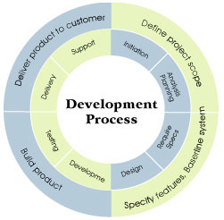

Services

Pioneer Info Solutions Technologies provides software product and application development solutions to large established companies as well small and medium companies and startups. The services comprises of entire product life cycle for both vertical and system-level products.
All services include product visualization, concept-refinement, engineering plan, prototyping, design, implementation, maintenance and customer support. We also help migrate existing products to new technologies and platforms.
Our engineers are experienced in designing, coding, debugging, testing and maintaining a wide variety of systems and applications in diverse environments. They specialize in a number of programming languages and have in-depth knowledge of numerous databases, networks, and security systems.
Along with the traditional areas of software development, our staff has broad range of knowledge in the areas of web development, including firewalls and security, electronic commerce, secure email, web hosting and extranets.
Software development has been an integral part ofPioneer Info Solutions's business since our inception. Software development is often highly specialized and requires individuals who are knowledgeable and experienced using a variety of development tools in heterogeneous environments.